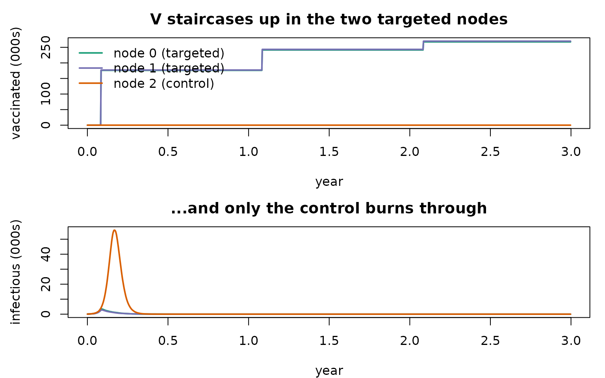
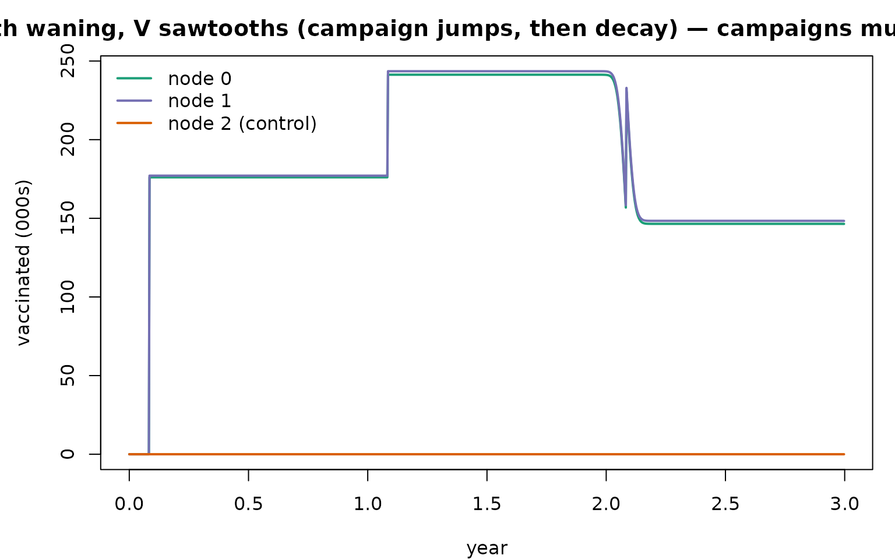
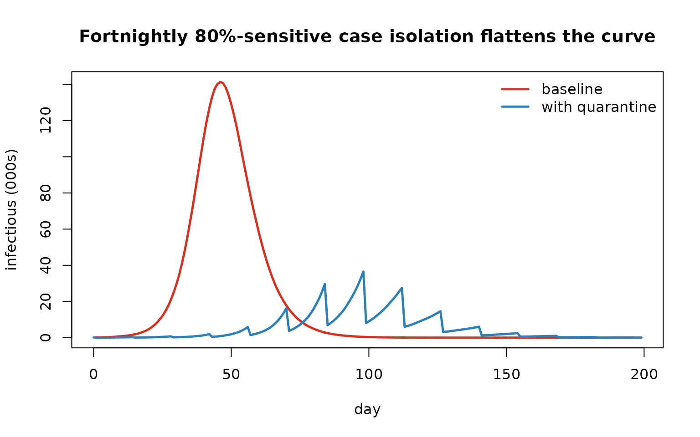

Interventions: custom states, vaccination campaigns, and quarantine
Source:vignettes/articles/interventions.Rmd
interventions.RmdCompanion to
examples/sia_campaigns.R,examples/sia_campaigns_waning.R, andexamples/quarantine.R. This notebook is about extending razer.
The extension toolkit
run_model() runs the built-in S/E/I/R disease step, but
most public-health questions need extra states and
interventions. razer exposes four hooks so you never have to
fork the runner or write a Rust kernel:
| Tool | What it does |
|---|---|
extra_states = "X" |
registers a new agent state X (a fresh
code in model$states): a census Column carried forward and
totalled into N. The disease kernels ignore unknown states,
so an agent in X is inert — not infected, not transitioned
— until you move it. |
init(model) |
once, before the loop: add per-agent Columns, seed states. |
step_enter / step_update /
step_exit
|
per-tick callbacks (start / between step & calc_foi
/ end). Each receives the model environment
($people, $nodes, $states,
$tick). |
step_timer_expire(state, timer, …, from, to) |
a generic kernel: decrement each agent’s u16 timer and,
on expiry, move from → to. The building block for
any timed transition. |
move_count(from, to, counts, tick) |
apply a per-node census delta (either side may be
NULL). |
An intervention is therefore: in a callback, change some agents’
state (and timer), then
move_count the matching census delta. Nothing in the
kernels changes.
1. A vaccination campaign (S → V)
A Supplemental Immunization Activity: on a schedule, in targeted
nodes, move each susceptible to a new "V" state with
probability coverage. V is protected — the
force of infection reads only the I census, and the disease
step never touches V. Three independent patches, with two
targeted and one control, make the node-targeting visible.
n_nodes <- 3L; pop <- 3e5L; nticks <- 3L * 365L
campaign_ticks <- seq(30L, nticks - 2L, by = 365L) # annual, first one early (preventive)
affected <- c(0L, 1L); coverage <- 0.6
campaign <- function(model) {
if (!(model$tick %in% campaign_ticks)) return(invisible())
V <- model$states[["V"]]; S <- model$states[["S"]]
s <- model$people$state$values(); nid <- model$people$nodeid$values()
cnt <- model$people$count
elig <- which(s[seq_len(cnt)] == S & nid[seq_len(cnt)] %in% affected)
vacc <- elig[runif(length(elig)) < coverage] # probabilistic coverage
if (!length(vacc)) return(invisible())
s[vacc] <- V; model$people$state$set(s)
move_count(model$nodes$S, model$nodes$V, tabulate(nid[vacc] + 1L, model$nodes$count), model$tick)
}
vax <- run_model(data.frame(population = rep(pop, n_nodes), I = rep(50L, n_nodes)),
"SIR", nticks = nticks, r0 = 2, infectious_period = dist_gamma(2, 4),
network = matrix(0, n_nodes, n_nodes), seed = 1L,
extra_states = "V", step_exit = campaign)
yr <- (seq_len(nticks) - 1L) / 365; col <- c("#1b9e77", "#7570b3", "#d95f02")
par(mfrow = c(2, 1), mar = c(4, 4.5, 2.5, 1))
matplot(yr, vax$nodes$V$values() / 1e3, type = "l", lty = 1, lwd = 2, col = col,
xlab = "year", ylab = "vaccinated (000s)", main = "V staircases up in the two targeted nodes")
legend("topleft", c("node 0 (targeted)", "node 1 (targeted)", "node 2 (control)"), col = col, lwd = 2, bty = "n")
matplot(yr, vax$nodes$I$values() / 1e3, type = "l", lty = 1, lwd = 2, col = col,
xlab = "year", ylab = "infectious (000s)", main = "...and only the control burns through")
2. Add waning immunity (V → S) — one extra callback
Permanent immunity above is just the absence of a return
transition. To make V wane, set a timer when vaccinating
and add a step_update that runs
step_timer_expire(V → S) each tick. That’s the
entire change — no new kernel, no disease-step
edit.
waning_days <- dist_normal(2 * 365, 90) # ~2-year immunity, per-agent draw
campaign_timed <- function(model) { # as before, but also set the waning timer
if (!(model$tick %in% campaign_ticks)) return(invisible())
V <- model$states[["V"]]; S <- model$states[["S"]]
s <- model$people$state$values(); nid <- model$people$nodeid$values(); tm <- model$people$timer$values()
cnt <- model$people$count
elig <- which(s[seq_len(cnt)] == S & nid[seq_len(cnt)] %in% affected)
vacc <- elig[runif(length(elig)) < coverage]
if (!length(vacc)) return(invisible())
s[vacc] <- V; tm[vacc] <- pmax(1L, round(waning_days$sample_n(length(vacc))))
model$people$state$set(s); model$people$timer$set(tm)
move_count(model$nodes$S, model$nodes$V, tabulate(nid[vacc] + 1L, model$nodes$count), model$tick)
}
wane <- function(model) { # the new piece: V -> S on timer expiry
V <- model$states[["V"]]; S <- model$states[["S"]]
w <- step_timer_expire(model$people$state, model$people$timer, model$people$nodeid,
model$people$count, model$nodes$count, V, S)
move_count(model$nodes$V, model$nodes$S, w, model$tick)
}
vaxw <- run_model(data.frame(population = rep(pop, n_nodes), I = rep(50L, n_nodes)),
"SIR", nticks = nticks, r0 = 2, infectious_period = dist_gamma(2, 4),
network = matrix(0, n_nodes, n_nodes), seed = 1L, extra_states = "V",
step_update = wane, step_exit = campaign_timed)
par(mfrow = c(1, 1), mar = c(4, 4.5, 2.5, 1))
matplot(yr, vaxw$nodes$V$values() / 1e3, type = "l", lty = 1, lwd = 2, col = col,
xlab = "year", ylab = "vaccinated (000s)",
main = "With waning, V sawtooths (campaign jumps, then decay) — campaigns must repeat")
legend("topleft", c("node 0", "node 1", "node 2 (control)"), col = col, lwd = 2, bty = "n")
Permanent V staircased up; waning
V sawtooths — the same campaign code, plus one
timer and one step_update. This composability is the
point.
3. Quarantine (a “Q” state with a different timed transition)
The same recipe gives case isolation. A periodic,
leaky testing programme detects each infectious agent
with probability sensitivity and moves it
I → Q; isolated agents stop transmitting (Q
isn’t in the I census). After a fixed period a
step_update releases them Q → R — here
step_timer_expire targets R instead of
S.
test_ticks <- seq(0L, 199L, by = 14L); sensitivity <- 0.8; iso_days <- 10L
detect <- function(model) {
if (!(model$tick %in% test_ticks)) return(invisible())
I <- model$states[["I"]]; Q <- model$states[["Q"]]
s <- model$people$state$values(); nid <- model$people$nodeid$values(); cnt <- model$people$count
inf <- which(s[seq_len(cnt)] == I); det <- inf[runif(length(inf)) < sensitivity] # 20% missed
if (!length(det)) return(invisible())
s[det] <- Q; tm <- model$people$timer$values(); tm[det] <- iso_days
model$people$state$set(s); model$people$timer$set(tm)
move_count(model$nodes$I, model$nodes$Q, tabulate(nid[det] + 1L, model$nodes$count), model$tick)
}
release <- function(model) {
Q <- model$states[["Q"]]; R <- model$states[["R"]]
r <- step_timer_expire(model$people$state, model$people$timer, model$people$nodeid,
model$people$count, model$nodes$count, Q, R)
move_count(model$nodes$Q, model$nodes$R, r, model$tick)
}
base <- run_model(data.frame(population = 5e5L, I = 100L), "SIR", nticks = 200L,
r0 = 2.5, infectious_period = dist_gamma(2, 4), seed = 1L)
quar <- run_model(data.frame(population = 5e5L, I = 100L), "SIR", nticks = 200L,
r0 = 2.5, infectious_period = dist_gamma(2, 4), seed = 1L,
extra_states = "Q", step_update = release, step_exit = detect)
matplot(0:199, cbind(baseline = rowSums(base$nodes$I$values()),
quarantine = rowSums(quar$nodes$I$values())) / 1e3,
type = "l", lty = 1, lwd = 2.5, col = c("#d7301f", "#2c7fb8"),
xlab = "day", ylab = "infectious (000s)",
main = "Fortnightly 80%-sensitive case isolation flattens the curve")
legend("topright", c("baseline", "with quarantine"), col = c("#d7301f", "#2c7fb8"), lwd = 2.5, bty = "n")
Extend further
The same three ingredients — a registered state, a callback that
re-labels agents + move_counts the census, and
step_timer_expire for any timed return — compose into much
more:
-
Stack interventions. Register
c("V", "Q")together and run vaccination and isolation callbacks in the same model. -
Other timed transitions.
step_timer_expire(from, to)works for any pair — a treatment stateT → R, a hospitalisedH → R/H → D, post-infection temporary immunity, etc. -
Targeting by attributes. Add a per-agent Column in
init(age, risk group, adob) and select intervention recipients withbincount_where()predicates (e.g. vaccinate only under-fives:dob > tick - 5*365). -
Reactive triggers. Make a campaign fire when
incidence crosses a threshold by testing
model$nodes$incidenceinsidestep_enterinstead of using a fixed schedule. -
Drivers.
step_updateruns just beforecalc_foi, so editmodel$nodes$beta/model$networkthere to model behaviour change or lockdowns affecting this tick’s transmission (census edits, by contrast, affect the next tick — see?run_model).